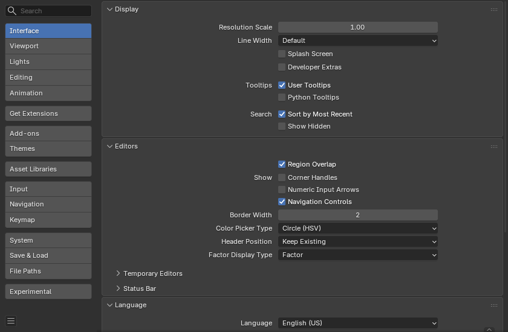

Interface¶
Cấu hình Interface cho phép bạn thay đổi cách các phần tử UI hiển thị và phản hồi.

Display¶
- Resolution Scale
Điều chỉnh kích thước font chữ và nút so với DPI được tự động phát hiện. Trong quá trình sử dụng thông thường, bạn có thể thích dùng chức năng thu phóng vốn có sẵn ở nhiều nơi trong giao diện Blender.
- Line Width
Tỷ lệ của các đường và điểm trong giao diện, ví dụ viền nút, edge và điểm vertex trong 3D Viewport.
Thin, Default, Thick
- Splash Screen
Hiển thị Splash Screen khi khởi động Blender.
- Developer Extras
Hiển thị các cài đặt và mục menu dành để hỗ trợ nhà phát triển, bao gồm:
Hiển thị tên của biểu tượng trong tooltip khi di chuột tới các nút biểu tượng.
Thêm một vài tùy chọn vào menu ngữ cảnh của nút RMB:
Online Python Reference -- Để mở tài liệu tham khảo Python trực tuyến.
Copy Python Command -- Để sao chép biểu thức được dùng khi nhấn nút.
Edit Source -- Để chỉnh sửa mã nguồn Python định nghĩa nút.
Edit Translation -- Tùy chọn chỉnh sửa bản dịch UI (chỉ khả dụng khi add-on Manage UI translations cũng được bật).
- Tooltips
- User Tooltips
Khi bật, một tooltip sẽ xuất hiện khi con trỏ chuột nằm trên một điều khiển. Tooltip này giải thích chức năng của phần nằm dưới con trỏ và hiển thị phím tắt liên quan (nếu có). Khi tắt, bạn vẫn có thể ép hiển thị tooltip bằng cách giữ Alt rồi di chuột tới điều khiển.
- Python Tooltips
Hiển thị thông tin Python của thuộc tính bên dưới tooltip.
- Search -- Sort by Most Recent
Hiển thị các mục được chọn gần nhất ở đầu kết quả tìm kiếm, nếu không kết quả tìm kiếm sẽ được sắp xếp theo thứ tự alphabet.
Editors¶
- Region Overlap
Điều này khiến các vùng chồng lấn lên viewport. Tức là các vùng Toolbar và Sidebar sẽ hiển thị chồng lên vùng chính.
- Show -- Corner Handles:
Hiển thị các tay cầm nhỏ ở góc của từng Area. Chúng có thể được dùng để tách hoặc nối các vùng bằng thao tác nhấp-và-kéo.
Tùy chọn này đặc biệt hữu ích trên các thiết bị cảm ứng, nơi việc nhấp chuột phải chính xác hoặc chọn theo cạnh khó thực hiện hơn.
- Show -- Numeric Input Arrows
Khi bật, luôn hiển thị các mũi tên trong ô nhập số để tăng hoặc giảm giá trị.
Khi tắt, các mũi tên chỉ hiện khi di chuột tới thuộc tính.
- Border Width
Thiết lập khoảng đệm quanh từng vùng editor. Giá trị lớn hơn làm tăng vùng cảm ứng cho các điều khiển vùng, có thể cải thiện khả năng sử dụng trên bảng vẽ, màn hình cảm ứng, hoặc với người dùng có khó khăn về thị lực hay vận động.
- Color Picker Type
Chọn loại Color Space bạn ưa dùng cho Color picker. Nó sẽ xuất hiện khi nhấp LMB vào bất kỳ ô màu nào.
- Header Position
Vị trí header mặc định khi mở một editor mới.
- Keep Existing:
Dùng vị trí trên cùng cho hầu hết các loại editor và các vị trí đã lưu trong file khởi động.
- Top/Bottom:
Luôn đặt header ở phía trên hoặc phía dưới của editor.
- Factor Display Type
Cách các giá trị hệ số (factor) được hiển thị trong giao diện người dùng.
- Factor:
Giá trị được hiển thị dưới dạng số thập phân (float) từ 0.0 đến 1.0.
- Percentage:
Giá trị được biểu diễn dưới dạng phần trăm từ 0 đến 100.
Temporary Editors¶
Khi thực hiện một số thao tác, Blender sẽ mở một cửa sổ mới. Hành vi của các thao tác này có thể được cấu hình tại đây.
- Render In
Khi render, giao diện người dùng có thể làm một trong các việc sau:
- Keep User Interface:
Giao diện người dùng không thay đổi và bản render được tính toán ở nền.
- Maximize Area:
Một Image editor mới được mở như một cửa sổ tạm thời ở chế độ toàn màn hình.
- Image Editor:
Vùng lớn nhất trên màn hình được thay bằng một Image editor tạm thời.
- New Window:
Một Image editor mới được mở như một cửa sổ tạm thời với kích thước thông thường.
- File Browser
Khi mở file từ máy tính, giao diện người dùng có thể làm một trong các việc sau:
- Maximize Area:
Một File Browser editor mới được mở như một cửa sổ tạm thời ở chế độ toàn màn hình.
- New Window:
Một File Browser editor mới được mở như một cửa sổ tạm thời với kích thước thông thường.
- Preferences
Quyết định cách editor User Preferences hiển thị khi được mở.
- Maximize Area:
Mở Preferences như một editor tạm thời toàn màn hình trong cửa sổ hiện tại.
- New Window:
Mở Preferences trong một cửa sổ mới, riêng biệt với kích thước thông thường.
Status Bar¶
Các tùy chỉnh ảnh hưởng đến Status Bar.
Show
- Scene Statistics
Hiển thị thông tin về dữ liệu trong scene đang hoạt động.
Collection: Tên của Collection đang hoạt động.
Active Object: Tên của object được chọn đang hoạt động.
Geometry: Thông tin về scene hiện tại tùy vào chế độ và loại object. Có thể là số vertex, face, triangle hoặc bone.
Objects: Số object được chọn và tổng số object.
- Scene Duration
Hiển thị tổng thời lượng phát lại cùng số frame hiện tại và tổng số frame. Định dạng của văn bản thời lượng được quyết định bởi Timecode Style.
- System Memory
Hiển thị mức ước tính tiêu thụ RAM của Blender. Trong tình huống một máy chỉ chạy một phiên bản Blender, ước tính này cung cấp phép đo so với giới hạn phần cứng của máy.
- Extensions Updates
Hiển thị số lượng extension có bản cập nhật.
- Blender Version
Hiển thị số phiên bản của Blender đang chạy.
Language¶
- Language
Ngôn ngữ dùng để dịch giao diện người dùng (UI). Danh sách được chia thành các nhóm xác định mức độ hoàn thiện của bản dịch.
- Translate
- Tooltips
Dịch các mô tả khi di chuột tới các phần tử UI.
- Interface
Dịch tất cả nhãn trong menu, nút và panel.
- New Data
Dịch tên của các data-block mới.
- Date Format
Định dạng dùng để hiển thị ngày tháng.
- Default:
Dùng định dạng ngày mặc định cho ngôn ngữ được chọn.
- dd/mm/yyyy:
Hiển thị ngày theo ngày/tháng/năm, ví dụ
27/02/2019.- dd.mm.yyyy:
Hiển thị ngày theo ngày.tháng.năm, ví dụ
27.02.2019.- dd-mm-yyyy:
Hiển thị ngày theo ngày-tháng-năm, ví dụ
27-02-2019.- mm/dd/yyyy:
Hiển thị ngày theo tháng/ngày/năm, ví dụ
02/27/2019.- yyyy/mm/dd:
Hiển thị ngày theo năm/tháng/ngày, ví dụ
2019/02/27.- yyyy.mm.dd:
Hiển thị ngày theo năm.tháng.ngày, ví dụ
2019.02.27.- yyyy-mm-dd:
Hiển thị ngày theo năm-tháng-ngày, ví dụ
2019-02-27.
- Time Format
Định dạng dùng để hiển thị giờ.
- 24-Hour (23:59):
Hiển thị giờ theo đồng hồ 24 giờ, ví dụ
23:59.- 12-Hour (11:59 PM):
Hiển thị giờ theo đồng hồ 12 giờ, ví dụ
11:59 PM.
Accessibility¶
- Reduce Motion
Tránh các animation và hiệu ứng chuyển động trong giao diện. Tùy chọn này giúp giảm nhiễu thị giác và có thể tăng sự thoải mái cho người dùng nhạy cảm với chuyển động hoặc những ai thích giao diện tĩnh hơn.
Text Rendering¶
- Anti-Aliasing
Bật Anti-Aliasing cho văn bản giao diện. Khi tắt, văn bản được render bằng cách render chữ thẳng (chỉ tô các pixel tuyệt đối).
- Subpixel Anti-Aliasing
Render văn bản để có vị trí ngang tối ưu.
- Hinting
Điều chỉnh font hinting, kiểm soát khoảng cách và độ nét của văn bản hiển thị.
- Interface Font
Font thay thế cho font giao diện người dùng mặc định.
- Mono-space Font
Font thay thế cho font giao diện đơn cách (mono-space) mặc định (dùng trong Text editor và Python Console).